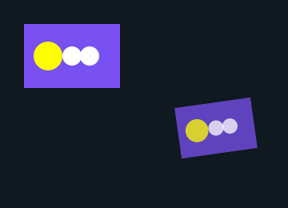

One canonical way
No aliases, no ambiguous defaults. rupa fmt normalizes
source so diffs stay small and generated files stay consistent.
v0.1 · compiled graphics language
Rupa is a strict, readable language for static vector and raster artwork. Write concise source, get deterministic pixels, and let stable diagnostics catch mistakes early.
The playground runs the real compiler and renderer in your browser. Nothing is uploaded.
size 360px x 260px
background "#101820"
group "Badge"
size 120px x 80px
rectangle at (0px, 0px)
size 120px x 80px
fill "#7950F2"
place "Badge" at (30px, 30px)
place "Badge" at (210px, 120px)
scale 0.8
Same source. Same bytes. Every time.
No aliases, no ambiguous defaults. rupa fmt normalizes
source so diffs stay small and generated files stay consistent.
Stable codes such as S005 and L010, exact
line:column locations, and suggested corrections in
text or JSON.
Define a group once, then place it with its
own position, scale, rotation, opacity, and z-index.
Gradients, patterns, text, clipping, and pixel-level raster layers share one document model and one renderer.
Variables, loops, conditionals, functions, and seeded randomness generate repetitive artwork without copy-paste.
Native CLI for files and automation; WebAssembly for an instant browser playground that uses the same pipeline.
Describe the canvas, shapes, layers, and paints in .rupa files.
The compiler resolves names, validates properties, and reports actionable diagnostics.
A deterministic CPU renderer composites the graphics IR into a PNG.
Install the CLI with Cargo, or skip setup and edit an example in the browser playground.
Open the playground$ git clone https://github.com/bungcip/rupa.git
$ cd rupa
$ cargo run -p rupa-cli -- render examples/shapes.rupa -o shapes.png
rendered examples/shapes.rupa → shapes.png